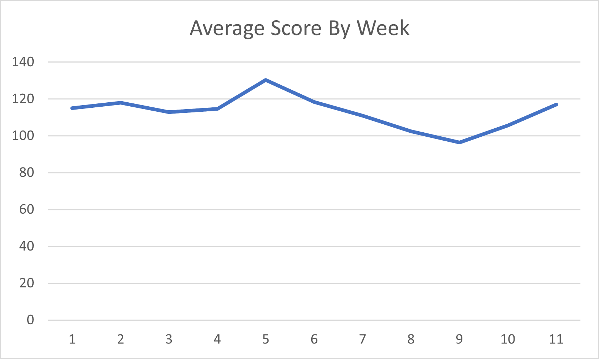
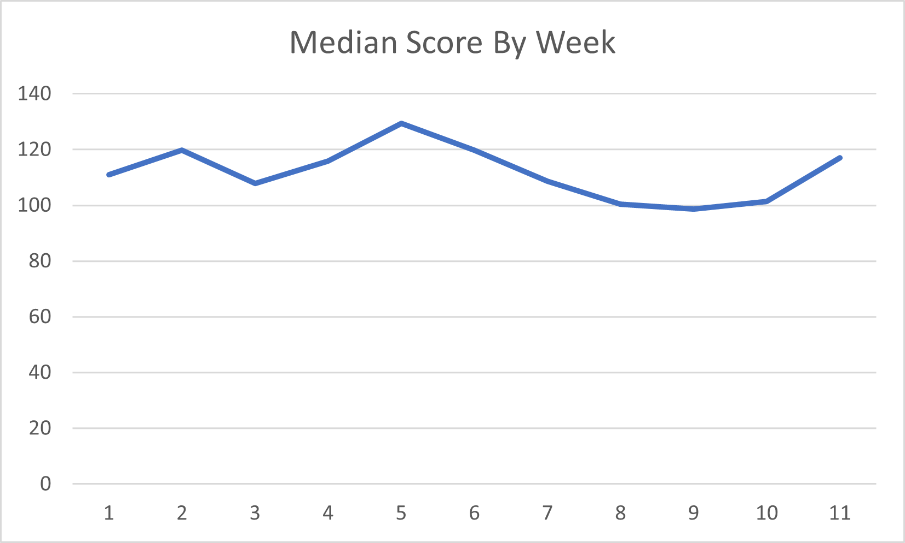
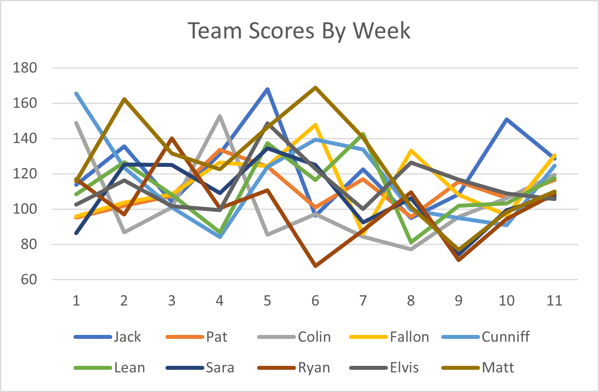

Washed Up Greyhounds Weekly Roundup
Week 11
Now that I am losing, I can safely say I hate fantasy football. This is like Dune, except instead of spice it's salt, and it's flowing through all of us. You have to be cool like me - who watched the movie, ordered the book, read 10 pages, and hasn't touched it since - to understand that reference. If you're reading this, say something mean to the person you played this week so we can really get the competitive juices flowing. No one? Okay. Let's get it moving.
Introductions
Wuhan Bats
Jawn Lunch
9-2
Might as well send him the prize pool now.
Wharf Rat Owners
Patrick Authority
4-7
Little Saint James is a weird place to spend Thanksgiving, but you do you.
Wandisimo
Colin Burke
4-7
ruh roh (cont.)
COOKing Dinner
Andrew Fallus
6-5
Cheats on the NYT crossword and everyone knows it.
Boston Weathermen
Matthew James Cunniff
6-5
Cunniff the kinda kid to text you all week that he's going to lose and then win easily and it makes the loss 10x worse than it would have been.
female playing
Colleen "Lean" McCormack and Will "Willean" McCormack
4-7
Did an entire marathon just to outrun the pain of not making playoffs.
Pelosi's Beefcurtains
Sara Aloupis and Sara Aloupis' Fantasy Slave
6-5
Resident dark horse.
Joe Biden's Speechwriter
Ryan Luca
3-8
If you flake on the punishment none of us are speaking to you again.
Earl Thomas' Brother
Elvis Smuth
6-5
Elvis be so focused buying on Pokemon Pearl, like bro, you gotta be focused on buying pearls for ur girl.
Scrub Daddy
Matt Kinny
7-4
Losing out the back half of the season just as I prophesied.
And now for your regularly scheduled programming:
Please Don't Touch My Graff
Mean Average Score
Median Average Score
Team Scores by Week
This graph last week had the axes flipped and no one noticed :(((((
Consistent Constipation
Another week, another boring consistency section.
| Team | Std Dev | |
|---|---|---|
| Wuhan Bats | 21.77 | |
| Whart Rat Owner | 11.56 | |
| Wandisimo | 24.26 | |
| COOKing Dinner | 18.14 | |
| Boston Weathermen | 23.48 | |
| female playing | 18.17 | |
| Pelosi's Beefcurtains | 17.82 | |
| Joe Biden's Speechwriter | 19.59 | |
| Earl Thomas' Brother | 14.19 | |
| Scrub Daddy | 26.89 |
Literally no one changed my more than a point this week, so I have nothing to say. Sorry not sorry. Next section.
ESPN Sucks
Woah dude this section is so fuckin cool.
| Team | Projected Score | Actual Score | Diff | |
|---|---|---|---|---|
| Wuhan Bats | 128.7 | 125.35 | 6.65 | |
| Whart Rat Owner | 116.5 | 99.4 | -17.1 | |
| Wandisimo | 119.4 | 88.3 | -31.1 | |
| COOKing Dinner | 130.5 | 96.5 | -34 | |
| Boston Weathermen | 124.6 | 121.15 | -3.45 | |
| female playing | 117.5 | 88.75 | -28.75 | |
| Pelosi's Beefcurtains | 107.2 | 151.75 | 44.55 | |
| Joe Biden's Speechwriter | 108.7 | 75.65 | -33.05 | |
| Earl Thomas' Brother | 105.6 | 140 | 34.4 | |
| Scrub Daddy | 110 | 97.05 | -12.95 |
It was a real tight race for biggest dissapointment this week between Wandisimo and Joe Biden's Speechwriter as usual, but for a nice change of pace the latter pulled through. Missing his projection by -33.05 points makes JBSW the biggest bummer of the week, and that's just the first of many accolades yet to come for our golden boy. The biggest projection beater of the week was Earl Thomas' Brother, and all that needs to be said is: Jonathan Taylor.
You Got "Lucky"
Next year I am doing less sections because I hate typing.
| Team | Hypothetical Record | Hypothetical Standing |
|---|---|---|
| Wuhan Bats | 64-35 | 2nd |
| Whart Rat Owner | 49-50 | 6th |
| Wandisimo | 31-68 | T-9th |
| COOKing Dinner | 50-49 | 5th |
| Boston Weathermen | 44-55 | 8th |
| female playing | 49-50 | 6th |
| Pelosi's Beefcurtains | 51-48 | 4th |
| Joe Biden's Speechwriter | 31-68 | T-9th |
| Earl Thomas' Brother | 61-38 | 3rd |
| Scrub Daddy | 66-33 | 1st |
Takeway time! Here we go:
In an extremely refresing change of pace for all of us, Wuhan Bats finally got a taste of their own medicine and are this week's unluckiest loser. Putting up the week's second best performance with 135.35 points, he lost to the highest scorer Pelosi's Beefcurtains. It quite literally couldn't have happened to someone more deserving.
Wait a minute, this is HUGE, guys. For the first time all year we have perfect symmetry between the unluckiest loser and luckiest winner. The 2nd highest scoring team lost to highest scoring team, and 2nd lowest scoring team, female playing with 88.75 points, beat the lowest scoring team JBSW. Wild stuff.
The Fr. Linnane's Special Little Hound Award
All I can think to say is, at least it wasn't Wuhan Bats. Congrats to our winner this week, who put up an impressive 151.75 points. ALSO, with this win, all 10 teams in the league have officially won this award! Yes, even Wandisimo and JBSW have won, shocking I know. That's very impressive parity considering how skewed the standings look.
The Fr. Linanne's Special Little Hound of Week 10 is...
Pelosi's Beefcurtains
Sara Aloupis
Congrats, you sucked the least!
A running tally of Fr. Linnane's Special Little Hound Award winners can be found here:
| Team | Special Little Hound Wins |
|---|---|
| Boston Weathermen | I |
| Scrub Daddy | II |
| Joe Biden's Speechwriter | I |
| Wandisimo | I |
| Wuhan Bats | II |
| female playing | I |
| COOKing Dinner | I |
| Earl Thomas' Brother | I |
| Pelosi's Beefcurtains | I |
The Lou of the Week Award
Oh, my sweet summer child. It's honestly impressive that someone has won this award more than you, but I digress. You are now tied for 2nd most Lou of the Week wins, and you better not do it again or that spot on the podium will feel much more cold and alone. With 75.65 points our free-win machine put up an expectedly pitiful performance. Good stuff!
The Lou of the Week is...
Joe Biden's Speechwriter
Ryan Luca
Congrats, you suck!
A running tally of Lou of the Week winners can be found here:
| Team | Lou of the Week Wins |
|---|---|
| Wandisimo | IIIII |
| Pelosi's Beefcurtains | I |
| Boston Weathermen | III |
| Joe Biden's Speechwriter | III |
Shit's getting juicy. Scrub Daddy is rapidly falling down the standings, making the playoff spots in the East literally anyone's game. Wandisimo and JBSW are tied at the bottom desperately trying to break off from one another, while Earl Thomas' Brother is sitting comfy atop the West with a largely undeserved first round bye set in his sights. Let's see what happens folks.
Archive
| Wk1 | Wk2 | Wk3 | Wk4 | Wk5 | Wk6 | Wk7 | Wk8 | Wk9 | Wk10 | Wk11 | Wk12 | Wk13 | Wk14 | Wk15 | Wk16 | Wk17 | Wk18 |
|---|